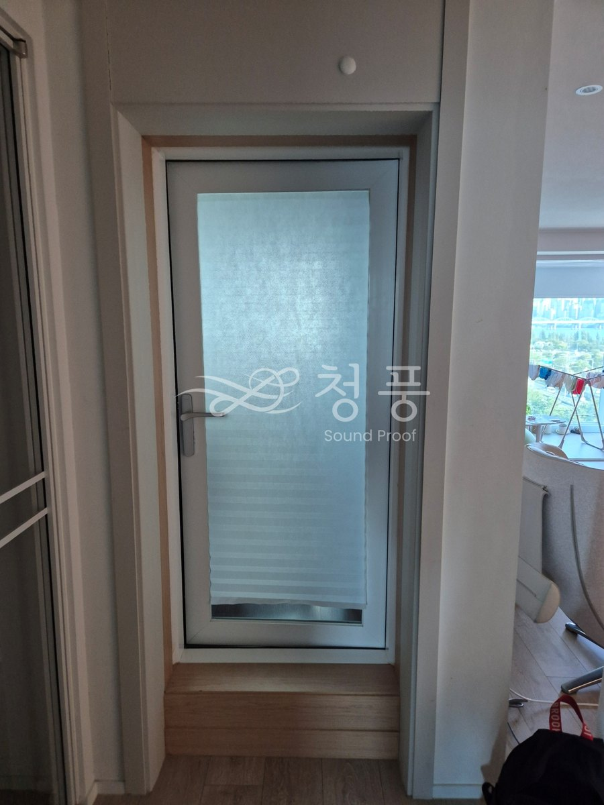
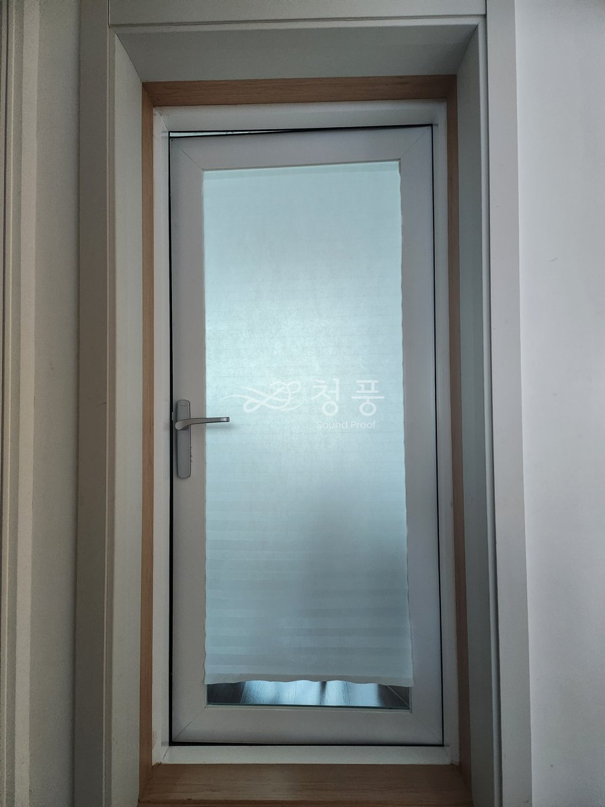
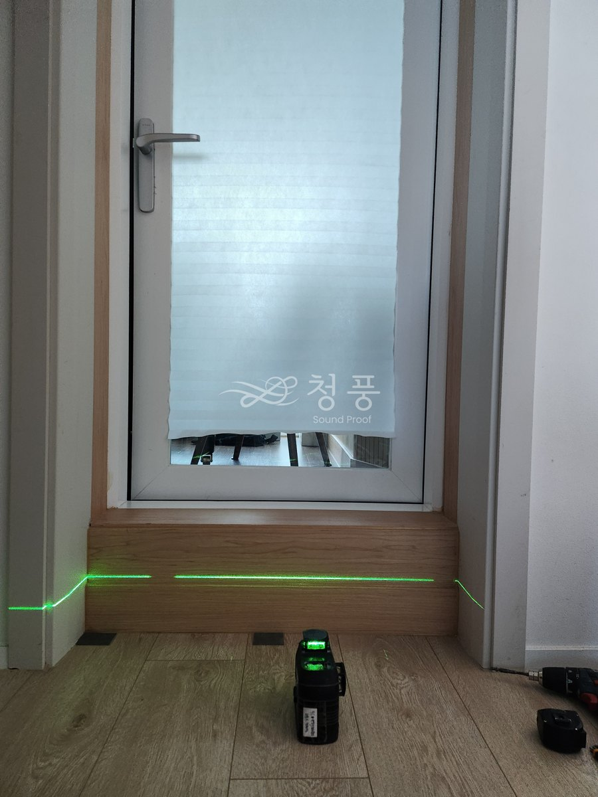
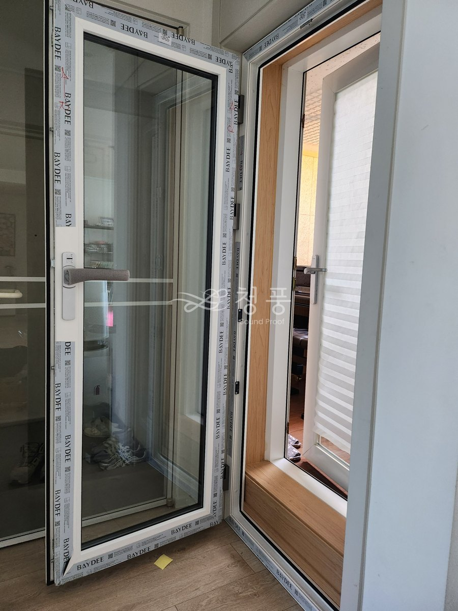
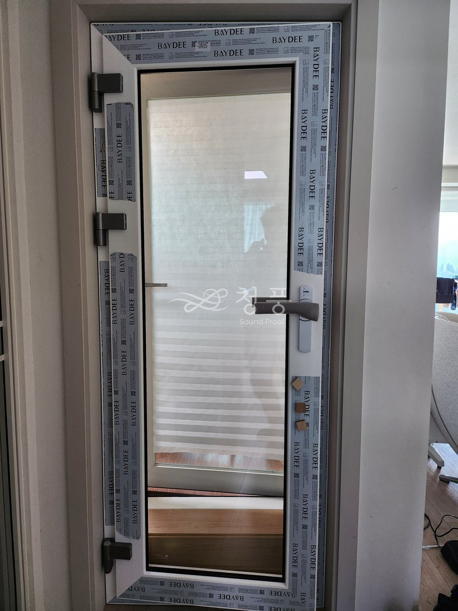
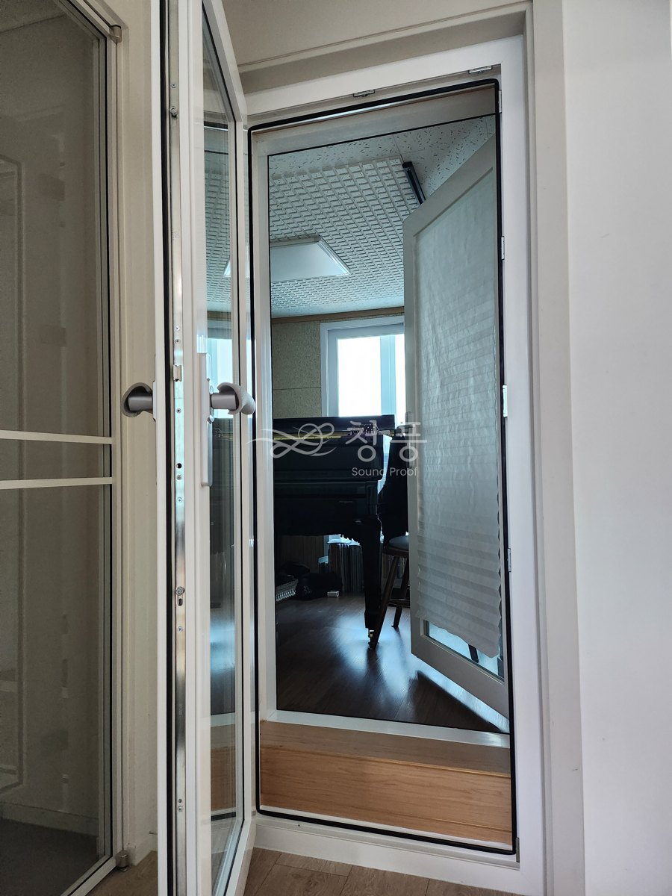

이미 다른 업체에서 방음공사를 해둔 방인데 그랜드피아노 소리가 밖으로 크게 들린다고 연락을 주셨습니다.
가보니 벽이 아니라 문이었습니다. 방음실 메인 문으로 일반 터닝도어가 달려 있었거든요.
벽은 한 군데도 건드리지 않고 23T 시스템 방음문을 한 짝 더 넣었습니다. 설치는 한 시간 남짓 걸렸습니다.

실측 때 찍은 교체 전 상태. 방음실 메인 문으로 일반 터닝도어가 달려 있었습니다.

기존 문 정면. 원래 있던 방문은 떼어낸 상태였습니다.

레이저 수평 레벨기로 바닥과 문틀의 기준을 먼저 잡습니다.

방음문 설치 중. 보호필름이 붙은 상태입니다.

문짝 설치. 문틀이 흔들리지 않게 부목을 덧대 고정합니다.

설치 완료, 문을 연 상태.설치 완료. 벽은 한 군데도 건드리지 않았습니다.
문의
평면도나 사진 한 장만 보내주셔도 됩니다
010-4867-4442
실측과 상담은 비용을 받지 않습니다. 방음문 한 짝 교체는 99만원부터이고, 기존 문 철거는 별도입니다.
상담부터 시공까지 보통 2~3주.
상담 → 실측 → 제작 → 일정 조율 → 시공 순서로 갑니다.
방음문은 치수를 받아 만드는 제품이라 대부분의 시간이 제작 기간입니다.